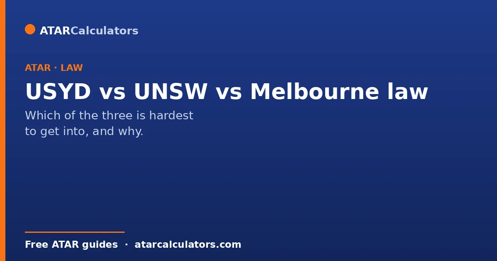
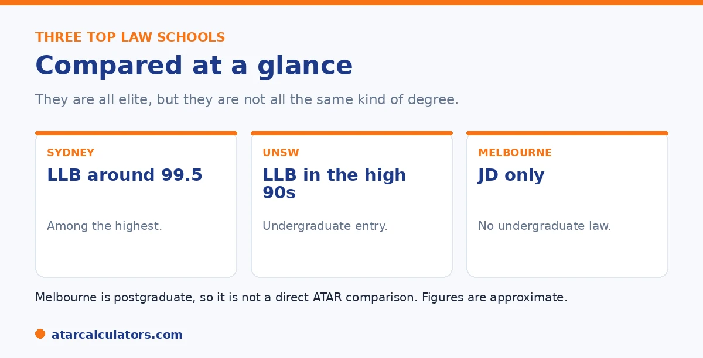

Here is the short version. Sydney's combined Bachelor of Laws sits around 99.5, among the highest cut-offs in the country. UNSW offers an undergraduate LLB in the high 90s. Melbourne is different: it is JD-only, with no undergraduate law degree, so it is not a direct ATAR comparison. School leavers can secure an assured Melbourne JD place with a very high ATAR, while graduates apply with their university results and the LSAT. Figures are approximate and change each year.
Sydney, UNSW, and Melbourne are three of the most sought-after law schools in Australia. But comparing them is not as simple as lining up ATARs, because they are not all the same kind of degree.
Below is how the three really compare. To explore your options, use our law ATAR calculator.
Key takeaways
- Sydney's combined LLB sits around 99.5, among the highest.
- UNSW offers an undergraduate LLB in the high 90s.
- Melbourne is JD-only, with no undergraduate law.
- Melbourne is not a direct ATAR comparison.
- School leavers can get an assured Melbourne JD place.
- Figures are approximate and change each year.
Three schools, three kinds of degree
The first thing to understand is that these three are not the same kind of degree. Sydney and UNSW offer undergraduate law, entered from school on your ATAR. Melbourne does not offer undergraduate law at all.

So a straight ATAR comparison only really works between Sydney and UNSW. Melbourne sits in a different category, which we will come to.
University of Sydney
Sydney offers an undergraduate combined Bachelor of Laws, and its cut-off is among the very highest in the country, around 99.5. So Sydney is, on ATAR alone, one of the hardest law degrees to enter directly from school.
Sydney also offers a postgraduate JD for graduates. But its headline undergraduate cut-off, near the top of the scale, is what gives it a reputation for being so competitive.
UNSW
UNSW offers an undergraduate LLB, usually as a combined degree, with a cut-off in the high 90s. That is very competitive, though typically a little below Sydney's headline figure.
UNSW is known for a practical, skills-focused approach to law. It also offers transfer pathways, with places each year for students moving in from other UNSW degrees. So there is more than one way in. See our lower-ATAR law guide.
Want to see your law options?
Try the law ATAR calculator →University of Melbourne
Melbourne is the outlier. It does not offer an undergraduate law degree at all. Law at Melbourne is the Juris Doctor, a postgraduate degree taken after a first degree.
So there is no undergraduate ATAR cut-off for Melbourne law. School leavers can secure an assured JD place with a very high ATAR, around 99 or above, then complete an undergraduate degree first. Graduates apply with their university results and the LSAT. See our LSAT and JD guide.
So which is hardest to get into?
On undergraduate ATAR, Sydney is the hardest of the three, sitting around 99.5, with UNSW close behind in the high 90s. Melbourne cannot be ranked on the same scale, since it has no undergraduate entry.
The honest answer is that all three are elite and highly competitive, by different routes. The right one depends on whether you want undergraduate or postgraduate entry, and the experience you are after. See our full law ATAR guide.
Because they compete on different terms, the useful comparison is by pathway rather than a single ranking. Sydney and UNSW both offer undergraduate law from school. So they can be compared on ATAR. Sydney's combined law sits at the very top, around 99.5, with UNSW close behind in the high 90s. Both also weight subject and equity adjustments into a selection rank. Melbourne is the outlier. It runs law only as a postgraduate Juris Doctor. So there is no undergraduate ATAR cut-off at all, and entry instead rests on your university GPA and, typically, an admissions test. That means a school leaver choosing between them is really choosing between two models. If you have a very high ATAR and want to start law immediately, Sydney or UNSW is the direct route. If your ATAR falls short, or you would rather do another degree first and keep your options open, there is another door. The Melbourne JD (or a JD elsewhere) reaches the same qualification. It is judged on university performance rather than Year 12. All three produce accredited lawyers, and all three are prestigious. So "hardest" depends on which currency you are measured in. It is ATAR for the undergraduate options, and GPA plus an admissions test for the graduate one. Match the pathway to your situation first, then compare within it.
Undergraduate LLB versus the Melbourne JD
The key structural difference is that Sydney and UNSW offer undergraduate law, entered from school with a very high ATAR, while Melbourne offers law only as a graduate JD, entered after a first degree. So they are not directly comparable for a school leaver.
If you want to study law straight from school, Sydney and UNSW are the relevant options among the three. Melbourne law comes later, after an undergraduate degree, through the JD. See how the LSAT fits the JD.
This means a school leaver aiming for “Melbourne law” is really planning a graduate pathway: a first degree at Melbourne or elsewhere, then the JD. It is a longer route, and a deliberate one, rather than a direct ATAR entry.
Applying to each
Applying to Sydney or UNSW undergraduate law means meeting a very high ATAR through the usual admissions process, with any adjustment factors applied. Applying to the Melbourne JD means completing a first degree, then applying as a graduate.
So the timelines differ sharply. The undergraduate route is immediate but demands a top ATAR now; the JD route unfolds over several years and depends on your university results rather than your school ATAR.
Beyond the big three
These three attract attention, but they are not the only strong law schools. ANU, Monash, UQ and others offer highly regarded law programs, and many universities beyond the top tier offer law at more accessible cutoffs.
So do not fixate on a single trio. A wider view reveals many excellent options, some easier to enter, all leading to the same professional qualification. The best choice depends on fit, not just name. See the full picture of law cutoffs.
Choosing between them
Choosing between these programs should rest on more than prestige: consider structure, location, cost, and whether you want to study law now or after another degree. The undergraduate-versus-graduate distinction alone may decide it for you.
If you want law immediately and can reach the ATAR, an undergraduate LLB suits you. If you prefer to study another field first, or your ATAR falls short, the graduate JD route becomes the natural path.
Does the university matter for law?
University reputation can influence some career paths in law, but a law degree from any accredited Australian program qualifies you to practise. Strong results, experience and connections often matter as much as the name of the university.
So while the top schools carry prestige, students at many universities go on to successful legal careers. Choose a program you can enter and thrive in, rather than assuming only the most selective will do.
A realistic view
The realistic view is that the big three offer different things: two undergraduate LLBs with very high cutoffs, and one graduate JD entered later. Which is “hardest” depends on how you count, and on which route you are actually on.
For most school leavers, the practical question is whether to aim for a top undergraduate LLB now or plan a graduate JD later. Both are demanding, and both lead to the same profession, so choose the route that fits your marks and plans.
Career outcomes
All three universities lead to strong legal careers, and a law degree from any of them is well regarded. Graduates go into private practice, government, business and beyond, and outcomes depend heavily on results, experience and connections, not the university alone.
So while each has prestige, your own performance and choices shape your career more than the badge. Students from all three, and from many other universities, go on to succeed across the legal profession.
Location and experience
Beyond rankings, the student experience differs by campus and city. Sydney and UNSW place you in Sydney; Melbourne’s JD places you in Melbourne, after a first degree. Location, campus culture and cost are worth weighing alongside cutoffs.
Since you will spend years there, choose a program whose location and structure suit you, not just its name. A course you enjoy and can thrive in matters more over time than a marginal difference in prestige.
Common questions
Which is hardest to get into: USYD, UNSW or Melbourne law?
On undergraduate ATAR, Sydney is the hardest, around 99.5, with UNSW close behind in the high 90s. Melbourne cannot be ranked on the same scale, since it is JD-only with no undergraduate law. All three are highly competitive.
Does Melbourne offer undergraduate law?
No. Melbourne does not offer an undergraduate law degree. Law at Melbourne is the Juris Doctor, a postgraduate degree taken after a first degree. So there is no undergraduate ATAR cut-off for Melbourne law.
What are the ATAR cut-offs for these law schools?
About, Sydney's combined LLB is around 99.5 and UNSW's LLB is in the high 90s. Melbourne has no undergraduate cut-off, but its assured JD pathway for school leavers needs a very high ATAR, around 99 or above. Figures change each year.
How do you get into Melbourne law?
Through the Juris Doctor, a postgraduate degree. School leavers can secure an assured place with a very high ATAR, then complete an undergraduate degree first. Graduates apply with their university results and the LSAT.
Is Sydney or UNSW law harder to get into?
On undergraduate ATAR, Sydney is typically harder, sitting around 99.5, with UNSW a little below in the high 90s. Both are extremely competitive, and figures change each year, so treat them as a recent guide.
Compare your law options
See realistic pathways into law based on your ATAR. Free, and no signup.
Open the law ATAR calculator →Related guides
This guide is general information for students and parents, not formal admissions advice. ATAR cut-offs, degree structures and entry rules vary by university and change every year. The LSAT applies only to some postgraduate JD programs, not undergraduate law. Any figures here are approximate and based on recent years. So always confirm the current details with each university and your state admissions centre (such as UAC, VTAC, QTAC, SATAC or TISC). Reviewed by the ATARCalculators Editorial Team.